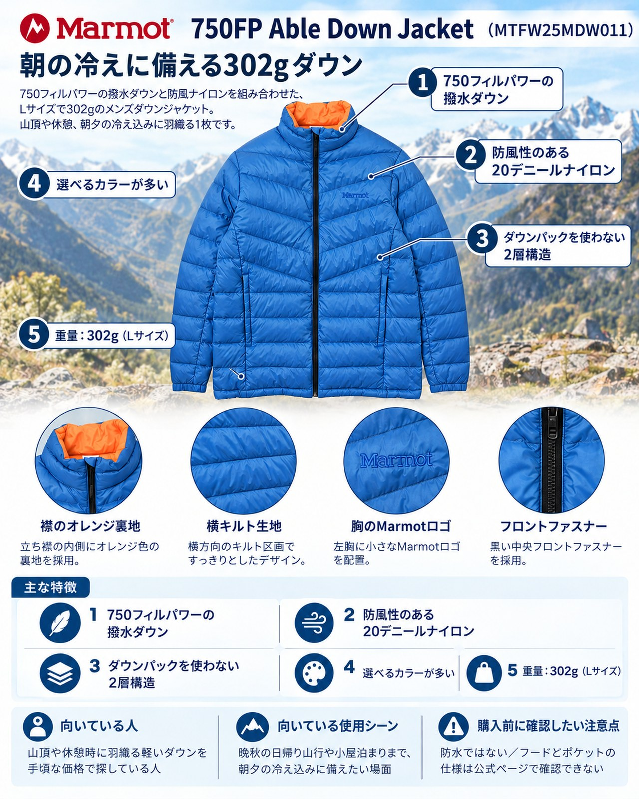

雨の続いた週の前半が過ぎ、週末は天気の回復が見込まれています。ただ、晩秋の入口のこの時期は、晴れても朝の冷え込みが強まります。山頂でのひと休みや、日の出前の歩き出しに羽織る防寒着を、ザックに1枚入れておきたい季節です。そんな場面に向くのが、マーモットの「750FP Able Down Jacket（750フィルパワーエイブルダウンジャケット）」（品番 MTFW25MDW011）です。Lサイズで302gと軽く、スタッフサックに入れて持ち運べるダウンジャケットです。日帰りから小屋泊まりまで、行動中は脱いでおき、止まったときに着る保温着を探している人に向きます。
基本スペック
※価格・仕様は2026年10月22日時点のマーモット公式オンラインストアの表示です。公式ページには通常価格の表記がありません。
| 項目 | 内容 |
|---|---|
| 商品名 | 750FP Able Down Jacket（750フィルパワーエイブルダウンジャケット） |
| 品番 | MTFW25MDW011 |
| 重量 | 302g（Lサイズ） |
| 表地・裏地 | ナイロン100%（20デニール、耐久撥水） |
| 中わた | 750フィルパワーの撥水ダウン（ダウン90%／フェザー10%） |
| 機能表記 | 耐久撥水、防風、750FPダウン、スタッフサック |
| サイズ | S／M／L／XL／2XL（アジアフィット） |
| カラー | ブルー、ブラック、ウォームグレー、カーキ、ディープピンク、セージ×ウォームグレー、オレンジ×ウォームグレー |
| 価格 | 19,800円（税込、公式オンラインストアのセール価格） |
Lサイズで302gの軽さ
公式の表記ではLサイズで302gです。山頂や休憩のときだけ着る保温着は、歩いている間はザックの中に入ったままです。持っていく負担が小さいことは、使う時間が短い装備ほど大事になります。付属のスタッフサックに収めれば、ザックの中で場所も決めやすくなります。
750フィルパワーの撥水ダウン
中わたはダウン90%・フェザー10%で、750フィルパワーの撥水ダウンを使っています。一部の紹介では、撥水ダウンによってダウンの水濡れを防ぎ、安定した保温性を確保しているとされています。結露や汗で湿りやすい山の中でも、ダウンが濡れにくい工夫がされているのは安心です。
防風性のある20デニールナイロン
表地・裏地は20デニールのナイロンで、耐久撥水と防風の機能がうたわれています。稜線で風を受けたときに、ダウンの暖かさが逃げにくいのは山で使ううえでの利点です。
ダウンパックを使わない2層構造
軽やかですっきりしたシルエットになるよう、ダウンを入れる袋（ダウンパック）を使わない2層構造にしていると公式は説明しています。防寒アウターとしても、インナーダウンとしても使えるとされており、真冬の街着や冬の山小屋で、シェルの下に着る使い方もできます。
選べるカラーが多い
山で目立つ色を選ぶか、街でも合わせやすい落ち着いた色を選ぶか、7色から用途で選べます。
デメリット・注意点
- 防水ではない：公式の機能表記は「耐久撥水」と「防風」で、防水とは書かれていません。雨や雪の中では、上にレインウェアを重ねる前提で考えましょう。
- フードとポケットの仕様が公式ページで確認できない：今回調べた公式ページには、フードやポケットの有無・数の記載がありませんでした。首元の保温や、手を入れるポケットを重視する人は、店頭や商品写真で確かめてから選んでください。
- 濃色の羽が透けることがある：公式ページには、天然素材のため濃色の羽が表面に透けて見える場合があり、それを理由とする返品・交換は受け付けないと書かれています。特に明るい色を選ぶ人は知っておきたい点です。
- サイズはアジアフィット：公式のサイズ表では、Lサイズの着丈72cm・身幅57cm・肩幅46cm・袖丈67cmです。インナーダウンとして使う場合は、上に着るシェルとの組み合わせも考えてサイズを選びましょう。
- 価格はセール表示：公式ページの価格はセール価格の表示で、通常価格は書かれていません。購入時期によって価格が変わる可能性があります。
向いている人・向いていない人
◎向いている人
- 山頂や休憩のときに羽織る、軽いダウンを手頃な価格で探している人
- 晩秋の日帰り山行や小屋泊まりで、朝夕の冷え込みに備えたい人
- 山でも街でも、アウターとインナーの両方に使える1着がほしい人
△向いていない人
- フードやポケットの仕様を重視し、写真だけで判断したくない人
- 雨や雪の中で、レインウェアなしで着たい人
- 実際の使用者の評判を確かめてから選びたい人
まとめ
マーモットの750FP Able Down Jacketは、Lサイズで302gの軽さと、撥水ダウン・防風生地を組み合わせたダウンジャケットです。行動中はスタッフサックに収めておき、山頂や休憩、日の出前の冷え込みに羽織る使い方に向いています。防水ではないことと、フードやポケットの仕様は購入前に確かめたうえで、晩秋の山行に持っていく保温着の候補に入れてみてください。
この記事で紹介した商品
価格・重量・在庫は各ブランド公式サイトの記載（確認日つき）にもとづきます。商品を押すと、購入先を選べます。
この記事にはアフィリエイト広告が含まれます。リンク先での購入により、当サイトが報酬を受け取る場合があります。山行の前には、最新の気象とルートの状況を必ずご確認ください。